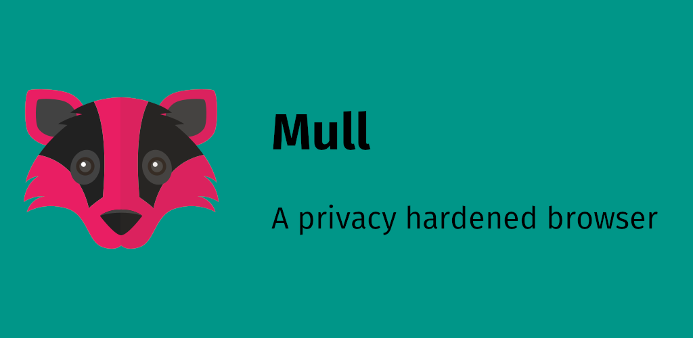

Browsers
Een browser is een manier om op het web te gaan. Je hebt veel verschillende browsers, maar ze zijn bijna allemaal anders. Ik ga het vooral hebben over privacy en security. Lees meer: https://madaidans-insecurities.github.io/security-privacy-advice.html. Op het moment is Brave waarschijnlijk een van de beste browsers.
Chrome/Edge/Vivaldi/Opera (GX)
Gebruik deze browsers alsjeblieft niet. Ze zijn allemaal gebaseert op Chromium, closed source en zijn vreselijk voor je privacy.
Ik houd je niet tegen als je het wel wilt doen, maar ik raad ze allemaal sterk af.
(Vivaldi is een prima browser en is redelijk betrouwbaar. Het blijft alleen een nadeel dat het closed source is.)

Firefox (FOSS)
Firefox is een hele bekende en goede browser. Het is snel, veilig, open source en is niet gebaseert op Chromium. Toch is het na installeren niet helemaal veilig, omdat Mozilla (de makers van Firefox) je gegevens collecteert en het niet geoptimaliseerd is voor privacy. Daarom raad ik arkenfox aan als je een van de veiligste browsers ooit wilt (op Tor na dan).
Hoe harden ik Firefox (met arkenfox)?

LibreWolf (FOSS)
Kort gezegt is LibreWolf een fork van Firefox en is het bijna hetzelfde als Firefox + arkenfox, zonder de moeite die arkenfox met zich meebrengt. Het is handig als je niet zo ervaren bent met het hardenen van Firefox.

Brave (FOSS)
Brave heeft hogere security dan Firefox, omdat het gebaseert is op Chromium. Dit is ook een nadeel, omdat het meedoet aan de monopolie van Google. Ik vind Brave de beste browser omdat het hoge privacy en security heeft, geen websites breekt zoals bij Firefox en het makkelijk te gebruiken is.

Bromite (FOSS)
Bromite is de beste browser op Android. Het is op Chromium gebaseert en heeft een ingebouwde adblocker. Het is snel en veilig. Er is wel een nadeel aan Bromite, omdat Bromite een oude versie van Chromium gebruikt. Dit kan invloed hebben op je security. Gebruik daarom Brave of Mull totdat Bromite geupdate wordt. Vanadium is een browser die alleen beschikbaar is voor Graphene OS. Vanadium heeft waarschijnlijk de hoogste security en is sterk aan te raden als je Graphene OS hebt.

Tor (FOSS)
Tor is de beste browser voor privacy en security. Je kan met Tor op de dark web en je bent compleet anoniem. Het is alleen niet aan te raden, omdat het erg langzaam is. LibreWolf is een goed alternatief. Tor staat voor "The Onion Ring".

Mull (FOSS)
Mull browser is een Firefox gebaseerde browser voor Android. Het gebruikt allemaal privacy features van Tor en arkenfox.
Search engines
De beste search engine vind ik Duckduckgo. Het is een van de beste voor privacy en security en is gedeeltelijk FOSS. Daarnaast zijn Startpage (gemaakt in Nederland lol) en SearX ook goed voor privacy, maar ik vindt ze minder goed. Met DuckduckGo kan je ook bangs (!) gebruiken. Dit is een uitroepteken + een letter of woord. Bijvoorbeeld: !g voor Google, !dpl voor DeepL of !w voor Wikipedia.

Extensions
uBlock Origin is een extensions voor bijna alle browsers en dient als een adblocker en privacy helper. Er zijn verschillende modussen (very easy-, easy-, medium- en hardmode) van hoe gevoelig je hem wilt instellen. Gebruik Toolz by D3ward om te checken of het goed werkt. LibreWolf installeerd het automatisch al.
uBlock Origin is de enigste extension die ik aanraad. Meer heb je ook niet nodig. Meerdere extensions kunnen je meer "fingerprintable" maken. Zie ook veel mensen met Privacy Badger of DuckDuckGo Privacy Essentials. Dit is compleet overbodig. uBlock Origin doet exact hetzelfde en zelfs nog een beetje meer ;)